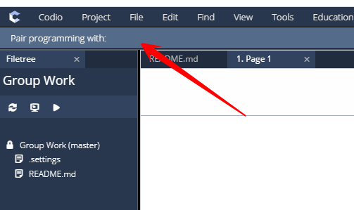

Pair Programming¶
The Paired Programming setting is enabled by teachers to allow groups of students to work together on assignments. Within each group a student will be a Driver who has the ability to edit and make changes in the assignment and others in the group will be Navigators who can view the work done by the Driver. Control can be passed between the driver and navigators as required.
When others are accessing the assignment, you will see their details in the Pair programming with: above the assignments

Driver/Navigator¶
Within a group there is a Driver who has control of the assignment and Navigators who are able to view the work being done by the driver where they can see the drivers cursor location and selections (similar to googleDocs). If the cursor cannot be seen (e.g. the driver is on another page or file in the assignment), clicking on the drivers username in the top panel will take the navigator to their location
To transfer control between users, the navigator can start to type and if the existing driver is not actively working, they will see the Driver toggle switch flip to show they now have control.
If the existing driver is still actively working, the navigator can flip the toggle switch next to “Driver” to request control.

If the driver is still working they will get a notification asking for control. This will not block the driver from continuing their work if they deny the request and when the are ready to release control, the can toggle the switch to transfer control to the requestor or grant access from the notification pop up if still showing.
The navigator will see the Driver toggle switch flip to show they now have control.
Audio/Video/Chat¶
Where students are accessing the same assignment, a Call button will show allowing Audio/Video calls and or real time chat. See Audio/Video/Chat for more information